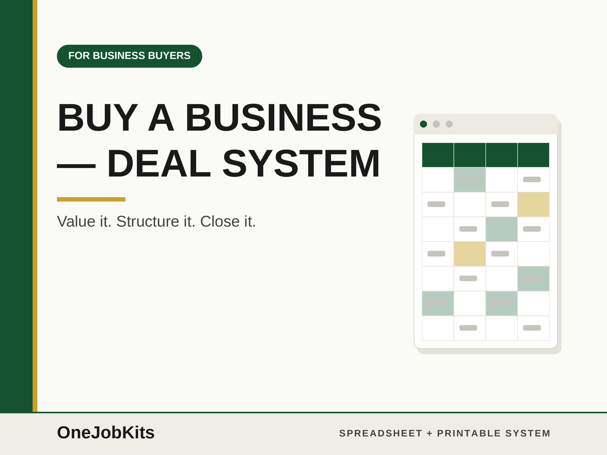

OneJobKits · Kit #8
Acquisition / SBA Buyer Deal System — buying a small business checklist

If you searched for a buying a small business checklist, you are probably discovering what most first-time buyers discover: the purchase is the biggest of your life, and it is being run out of a messy folder of broker emails, half-remembered numbers and a lender checklist you keep losing.
This page gives you the first piece free: the first-30-days checklist for starting a search properly. Below it is the full system it comes from — one organised place to normalise the seller's numbers with evidence, price the deal, model an SBA 7(a) loan or seller financing, track every diligence document, and walk into closing — and your first 100 days as owner — with a plan instead of a pile. It is an organiser and calculator system only: not financial, legal or tax advice, and not a valuation opinion.
Free download — start with the SBA Buyer's First-30-Days Checklist
The SBA Buyer's First-30-Days Checklist is the first month of a serious search on paper: what to set up, what to gather and what to ask, in order. Its Gumroad download also includes the SDE Quick Calculator — a first pass at turning a seller's reported profit into an earnings number you can sanity-check.
Download the free First-30-Days Checklist (PDF)Get the free pair on Gumroad
What the free pair does not do: it starts the search; it does not run the deal. The full system below takes over from the first real target — normalising, pricing, financing, diligence, closing and the transition — in one workbook where every number traces back to an input you typed.
What's inside the full kit
- The deal workbook (Excel + Google Sheets, no macros) — 12 tabs; yellow cells are yours to type in, blue cells calculate; every formula runs off your own inputs only
- START HERE · Deal Snapshot — how the system works, a deal-at-a-glance panel that auto-fills as you work, and the target business, asking price and key dates typed once and used everywhere
- SDE Normaliser — reported profit plus an add-back log with an evidence column and a status per line (Documented / Claimed only / Rejected); rejected add-backs are excluded automatically, producing your Normalised SDE and a Conservative SDE from documented add-backs only
- Offer Price Calculator — your SDE × your multiple = your offer, plus a 1.5×–4.0× range table on both SDE figures, set against the asking price
- SBA Loan Modeller — purchase price, down payment %, seller note → loan amount, monthly payment, annual debt service and total interest, from your rate and term
- DSCR Checker — cash flow after your owner salary and reserves ÷ annual debt service, with a plain-English reading; many SBA lenders look for ~1.25×
- Cash Needed — down payment + closing costs (SBA guarantee fee, attorney, appraisal, environmental…) + working capital + your reserve = the real cash you must bring, against the cash you have
- Diligence Tracker — 32 standard request items (financials, tax, legal, lease, contracts, operations, seller) with status dropdowns, dates, owner and a red-flag notes column, plus live counts
- Data-Room Index · Seller Questions Log · Lender Checklist · Timeline & Key Dates — every document registered (version, location, shared with whom); every question and answer logged (30 rows); the standard SBA 7(a) paperwork list (23 items) as a tracker; LOI → closing milestones, target vs actual
- Deal Worksheets (fillable PDF, 20 pages + Word LOI) — LOI worksheet (4 pp: parties, price & structure, contingencies checklist, terms & signatures), deal-terms summary (3 pp), seller-meeting notes (8 pp), red-flag review sheets (5 pp). Worksheets that organise your terms — your attorney drafts the binding documents
- Transition Planner — 100 Days (fillable PDF, 14 pages) — first-week, first-month and first-100-days checklists, plus staff, customer, vendor and systems communication & handover trackers
- Worked example file — the same workbook filled in end-to-end with one fictional $850,000 deal, so every tab can be seen in use before you open the blank one
- Pro ($249) adds: the PRO workbook with 3 industry diligence modules — Laundromat (machine inventory with replacement-exposure totals, utilities & cost-per-turn maths), Trades (licence register, fleet table, contracts & backlog totals), E-commerce (platform & ad-account transfer trackers, inventory & supplier registers) — plus the matching Industry Modules checklists (PDF, 9 pages)
A filled example — so you can see the finished thing
The system ships with the workbook filled in end-to-end for one fictional deal — an Austin auto-repair business. The business, the people and every figure are invented, and the file is marked as an example; what is real is how the numbers flow from tab to tab:
| Step, as the tabs compute it | The example deal |
|---|---|
| Asking price | $850,000 |
| SDE Normaliser | Reported profit $238,000 → Normalised SDE $380,200, after the add-back log separates the documented add-backs from the claimed and rejected ones |
| Offer Price Calculator | 2.25× the Normalised SDE = an offer of $855,450, with the 1.5×–4.0× range shown on both SDE figures |
| SBA Loan Modeller | 15% down → a loan of $727,133 at 10.75% over 10 years |
| DSCR Checker | 2.36 — the example's cash flow covers its annual debt service 2.36 times over, after owner salary and reserves |
| Cash Needed | $231,978 in total — the down payment plus closing costs, working capital and reserve, known before the LOI, not after |
That is the shape of the whole system: no number appears from nowhere, every claim a seller makes is either documented or marked, and the questions a lender will ask have answers in a register — not in your inbox.
Who it is for
First-time business buyers and self-funded searchers financing an acquisition with an SBA 7(a) loan or seller financing — people in an active search or under LOI who want the deal run from a system instead of a folder.
Who it is not for
Brokers and advisors who need client-facing tools; anyone wanting a valuation opinion; and anyone looking for a prediction of whether a specific deal will succeed. It calculates from your inputs; it does not judge the deal for you — your attorney, CPA and lender make the binding calls.
Questions buyers ask
- What is SDE, and why does it need "normalising"?
- SDE — seller's discretionary earnings — is the profit figure small-business prices are usually based on, and it is built from the seller's reported profit plus "add-backs": owner perks and one-off costs added back in. The SDE Normaliser logs every add-back with an evidence column and a status — Documented, Claimed only, or Rejected — and rejected add-backs are excluded automatically. It produces a Normalised SDE and a Conservative SDE built only from documented add-backs. The rule printed on the tab: an add-back you can't document is an add-back that doesn't exist.
- Is this a valuation, or financial advice?
- No. It is an organiser and calculator system. It calculates from your inputs only — nothing is pulled from outside data — and it does not judge whether a deal is good, predict whether one will succeed, or replace your attorney, CPA or lender. It makes sure you arrive in front of them with every number and document in order.
- Does it work with seller financing, or only SBA loans?
- Both. The SBA Loan Modeller takes purchase price, down payment percent and any seller note, and computes the loan amount, monthly payment, annual debt service and total interest from your rate and term — the same maths serves an SBA 7(a) structure or a seller-financed one.
- What is the DSCR check, and why 1.25?
- The DSCR Checker divides the business's cash flow after your owner salary and reserves by the annual debt service. Many SBA lenders look for coverage around 1.25×, and the tab gives you a plain-English reading of your figure before a lender gives you theirs — so a deal that cannot carry its payment is visible on paper, early.
- How much cash do I actually need to bring?
- More than the down payment — which is why the Cash Needed tab exists: down payment plus closing costs (the SBA guarantee fee, attorney, appraisal, environmental and the rest), plus working capital, plus your reserve, totalled and set against the cash you have. First-time buyers blow up deals by discovering this number at the end; the tab makes you face it at the start.
- What does the diligence tracker actually track?
- 32 standard request items across financials, tax, legal, lease, contracts, operations and the seller — each with a status, dates, an owner and a red-flag notes column, with live counts. Around it sit the Data-Room Index (every document: version, location, who it was shared with), the Seller Questions Log (every question, the answer you got, and follow-ups) and the Lender Checklist (the standard SBA 7(a) paperwork list, 23 items, as a tracker).
- What does the free checklist cover, and what does the full system add?
- The free Gumroad download pairs the SBA Buyer's First-30-Days Checklist with the SDE Quick Calculator — the first month of a search, and a first pass at a seller's earnings number. The full system runs the whole deal: normalising, pricing, loan modelling, the cash truth, all the trackers, the LOI worksheets and the 100-day transition plan for after you get the keys.
Prices
Standard: $199 · Pro: $249 — one-time payment, digital download. No subscription; the files are yours.
Can't find the kit you need?
We build it. Ask us — first asker gets it at half the shelf price. Tell us the job at onejobkits.com and we will build the kit for it.
Related kits
Please know: this is an organiser and calculator system only — not financial, legal, or tax advice, not a valuation opinion, and not a lending or brokerage service. It does not predict whether any deal will succeed, and it does not replace your attorney, CPA, or lender. The example business, people, and figures are fictional and included only to show how the sheets work.